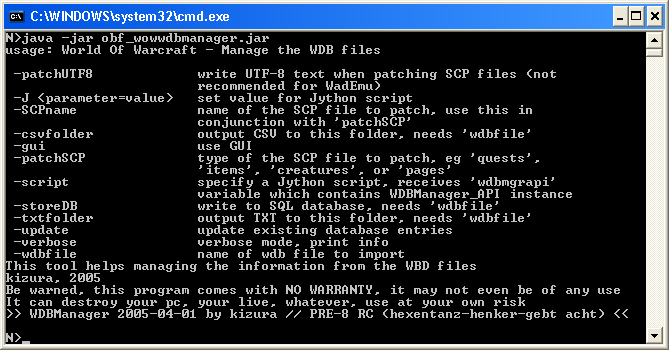
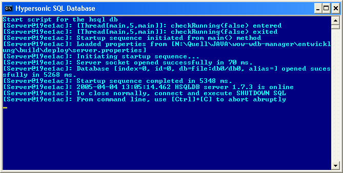

WoWWDBManager is designed to handle the information found inside the WDB files stored inside the client's cache.
WDB files are
transferred during playing on a WoW server and are stored inside the
WDB folder. Using this caching strategy helps blizzard to reduce the
network traffic.
The WoW Client contains the whole world, but
no quests, npcs or mobs. These information is transferred from the
server to the client. And the client caches these information.
With WoWWDBManager
you can:
Create a CSV file from your WDB files
Create a TXT file from your WDB files
Store the WDB information in a SQL database (getestet mit Hypersonic, Oracle und MySQL)
Patching existing *.scp files with the information from your database
Start the program using the console, gui or scripting version
Enhance the
program using Jython scripts
(You have full access to the WDB
database using Jython!)
Kizura
Zgabi
lousy.kizura@gmail.com
Linux or Win32
environment (Others may work, too, but are not tested)
Java 1.4.2
installed
(Win32)
Unzip the
archive
Open msdos prompt
Change to the installation
folder
Invoke the program:
java -jar
obf_wowwdbmanager.jar
Output:

Usage
Parameter
csvfolder <folder>
Specifiy the folder for the CSV export.
If you want to create
a CSV file, you must provide the output directory.
Needs
"wdbfile"
parameter.
gui
Start the
graphical user interface, all other parameters are ignored.
J
Define
Parameters for a Jython script. Syntax: "-Jparam=value"
script
Call
this Jython script. This script is invoked in the context of the
WDBManager and receives the variable "wdmgrapi",
which is an instance of "WoWWDBManager_I".
(Please refer to JavaDocs)
storeDB
Save
the values from the WDB file inside the database
Needs "wdbfile"
parameter.
txtfolder
<ordner>
Specify the folder for TXT export..
If you want
to create a TXT file, you must provide the output directory.. The
TXT file can be used for debugging.
Needs "wdbfile"
parameter.
update
Use
"update" if you
also want to update entries inside the database. Otherwise existing
entries are ignored (insert only).
Needs "wdbfile"
parameter.
verbose
Switch
to verbose mode, displays more info (console).
wdbfile
Specify
the complete path to the WDB file.
SCPName
<myFile.scp>
Name of the SCP file that should be
patched.
The information stored inside the database are used to
replace the entries inside the SCP
file.
Creates:
"<myFile.scp>_patch“ Contains
the patched SCP file
"<myFile.scp>_patch_info"
Contains information about the patch process
Examples
java -jar obf_wowwdbmanager.jar -wdbfile
c:\temp\wdb\questcache.wdb -csvfolder c:\meine_csvs
java -jar obf_wowwdbmanager.jar -wdbfile
c:\temp\wdb\questcache.wdb -txtfolder c:\meine_txts
java -jar obf_wowwdbmanager.jar -wdbfile
c:\temp\wdb\questcache.wdb -csvfolder c:\meine_csvs
-txtfolder c:\meine_txts
java -jar obf_wowwdbmanager.jar -wdbfile
c:\temp\wdb\questcache.wdb -storeDB -update
Replaces values inside an existing quests.scp, items.scp, etc. with values from your database. What should be replaced is configured inside "patchSCP.xml" and can be changed by the user. Please note that patching "multi value" attributes does not work (eg level=1 4)
Values for "patchSCP":
quests, items, creatures, pages
java
-jar obf_wowwdbmanager.jar -patchSCP quests -SCPname
/tmp/myQuests.scp
java -jar
obf_wowwdbmanager.jar -gui
java -jar
obf_wowwdbmanager.jar -script c:\temp\myScript.jy -Jnose=bear
Call
the script "c:\temp\myScript.jy"
and pass the parameter "nose"
with the value "bear".
Now your Jython script has a variable called "nose"
with the value "bear".
WoWWDBManager
supports 3 types of databases:
Oracle (9i tested)
MySQL
Hypersonic SQL
Datenbank 1.7.3
(included)
wdbmanager_sql.properties
|
# |
Pre:
Suffix .bat –
Script for Win32
Suffix .sh – Script for Linux
You find the script
„start_hsqldb“.in
your installation directory.
This script will start the hypersonic
SQL database.
(You can access this database with JDBC, username
and password can be found in the file
wdbmanager_sql.properties
zu entnehmen.
If you want to access other databases, please
adjust the script „wdbmanager_sql.properties“.

Starting the hypersonic
SQL database
Description of the WDB files
creaturecache.xml
gameobjectcache.xml
itemcache.xml
itemnamecache.xml
itemtextcaxhe.xml
npccache.xml
pagetextcache.xml
questcache.xml
|
<?xml
version="1.0" encoding="UTF-8"?> |
pagetextcache.xml
|
WoWWDB-Manager by Kizura ZGabi Version: Version PRE 9 – "die goldene Kettet" |
Seite |